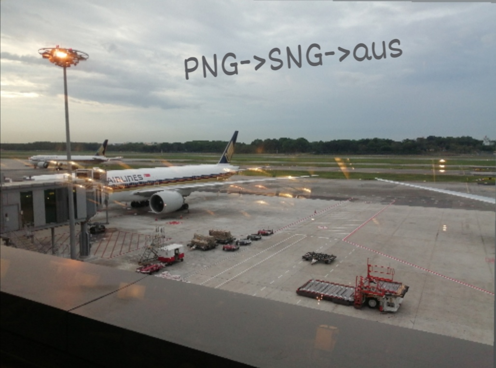
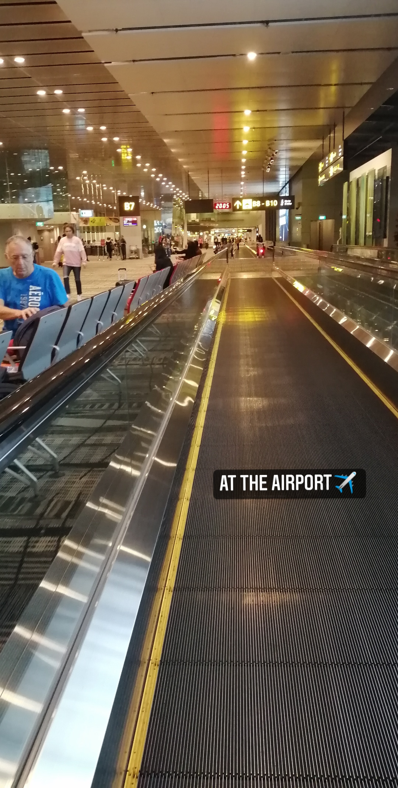

A Trip To Australia
Travelling with my family
On 23 November 2019, My family and I went to Australia as a vacation.We went there for 8 days, 3 days at Melbourne,1 day at Philip Island and 4 days at Sydney.It was a really exciting and relaxing trip. We took plenty of memorable photos as a memento.In this trip, we saw penguin, kangaroos and koalas...... They are very cute! Besides, we are also learnt how to take trams and the foods there were marvellous😍
Some Photos in the airport...


I really love this trip in Australia, I hope that we can go for another trip in the future together.